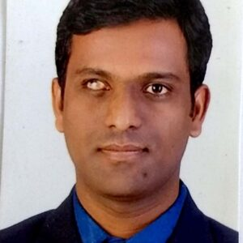

ELECTRICAL & ELECTRONICS ENGINEERING

The department has well equipped EM lab, Power Electronics lab, control systems lab, Measurement lab, Network lab , MPMC lab and Simulation lab. The equipments are from standard reputed companies / suppliers viz. Kirloskar, Crompton & Greeves etc. the labs are spacious as per AICTE requirements and are located in ground floor of main building. The department organizes planned industrial tours for the students of III EEE every year to companies like BHEL , power Stations viz. RTPS , VTPS , Sree Sailam HEPS , Steel Plants of Visakapatnam and Hospet etc.
EEE Mission & Vision :
To facilitate the students to thoroughly appreciate and assimilate the nuances of the discipline with particular accent on empiricism Our department is accredidated. The department with 16 strong and committed faculty and supporting staff with rich practical experience is headed by Prof. B. Veeresham, who has completed M.Tech in Electrical Engineering with a specialization in Power Electronics from JNTUH. He has 10 years of industrial experience. The department is blessed with support from academic and industrial luminaries like Dr. Tulasiram Das, Hon’be VC of JNTU Kakinada, and Dr. GN Srinivas, Prof. EEE Department of JNTU Hyderabad, and former head of the department Prof TVSN Murthy retired DGM from BHEL.
Mission:
To have a technical collaboration with premier educational institutes and Maharatna Companies for exchange of state of art and know how. To impart and to encourage concept oreinted studies with work experince. To acheive 100% placements.
Vision:
To develop the department to the equivalent levels of premier technical institution in the country. To produce electrical engineers vibrant with “SELF CONFIDENCE” “STATE OF ART” to enable them to fit any slot and to produce national wealth. To establish the department as a research and development center in electrical engnieering and meet the needs of future.
About the department :
The department has well equipped EM lab, Power Electronics lab, control systems lab, Measurement lab, Network lab and Simulation lab. The equipments are from standard reputed companies / suppliers viz. Kirloskar, Crompton & Greeves etc. the labs are spacious as per AICTE requirements and are located in ground floor of main building.
The department organizes planned industrial tours for the students of III EEE every year to companies like BHEL, power Stations viz. RTPS , VTPS , Sree Sailam HEPS , Steel Plants of Visakapatnam and Hospet etc. Also the department periodically organizes seminars, workshops expert lectures to make staff and students to keep in pace with latest developments in the field and state of art.
In addition to the excellent library and Digital library facilities in the college, the department has its department library with updated journals and manuals. These educational facilities coupled with encouragement, motivation above all serene environment provide Philip to our staff and students to do innovative and creative things. Thus , we in the department designed and fabricated various domestic and industrial working models viz. UPS, IG inverters etc clap switch, Burglar alarm and designed and fabricated “ Integrated Auto Traction System” working model. The advantages of this IATS are not only to detect and control the station and rail way gates but also dynamically check the continuity of the track which is relatively a new concept in our country. This ensures safety of passengers in addition to railway property.
The final year students developed a working model “ Micro controller Based Smart Energy Meter with Data Transmission” with special features Power Consumption Data Transmission Directly to substation concerned, Power theft prevention, HV / LV protection etc. We propose to suggest to the concerned CPDCL authorities for implementation after verifying commercial feasibility.
Some of the working models were selected and found placed in the exhibition organized by SRUJANA, PRAGNA etc. Most of the models won laurels by one and all.
The students presented papers at various seminars organized by various colleges in AP and other states. Some of them won first prize.
The faculty members are deputed to attend seminars , workshops organized by Osmania University , JNTU, NIT and IISC Banglore etc.
Under QIP our management is magnanimous to sponsor our staff to M.Tech programs 4 staff members completed M.Tech. The faculty of the department presented more than 6 technical papers in international conferences.
The department offers technical and training support to the industries located in this region.
Based on “Bridge Course Analysis” conducted by our department over a period of 12 months ( 2 spells ), we conducted courses for skills which are in high demand for our pre and final year students. This helps them to do well in “ placement interviews” etc.
As regards curriculum improvement program, our department has given number of suggestion to JNTU, most of them were adapted and introduced with Academic regulations course Structure.
HoD Profile :-

Dr. M Santhosh Kumar Goud
Dr. Santhosh has completed his Diploma in Electrical & Electronics Engineering from Government Polytechnic Mahabubnagar and B. Tech in Electrical & Electronics Engineering from PRRM Engineering College in 2005. He did his double masters from the prestigious University of St. Andrewes, UK and Universiteit Gent and Vrije Universiteit Brussel, Belgium with a full Erasmus Mundus scholarship awarded by European Commission. Later he worked as a Research Assistant at BPHOT Labs, TONA, VUB. He did his Ph.D. from National Institute of Technology Karnataka (NITK), Surathkal. He has a strong inclination towards interdisciplinary research areas.
His areas of interest include, Microgrids/Smart grids, Machine Learning/Deep Learning Applications to areas such as Power Systems, Power Quality, and Electric Vehicles.
Faculty & Staff:
Dr. M Santhosh Kumar Goud
JNTU ID :9318 – 200110 – 130548
Qualification :Ph.D. (NITK), MS(UK), MS(Bel)
Designation :Assistant Professor & HOD
Experience :5 Years
Contact :santhosh.manikonda@gmail.com
Menu 1
Ut enim ad minim veniam, quis nostrud exercitation ullamco laboris nisi ut aliquip ex ea commodo consequat.
Menu 1
Ut enim ad minim veniam, quis nostrud exercitation ullamco laboris nisi ut aliquip ex ea commodo consequat.
Menu 1
Ut enim ad minim veniam, quis nostrud exercitation ullamco laboris nisi ut aliquip ex ea commodo consequat.
Menu 1
Ut enim ad minim veniam, quis nostrud exercitation ullamco laboris nisi ut aliquip ex ea commodo consequat.